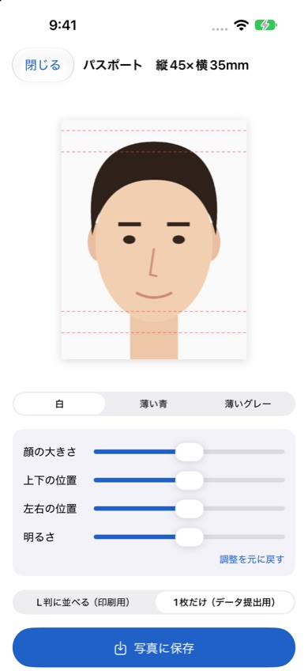
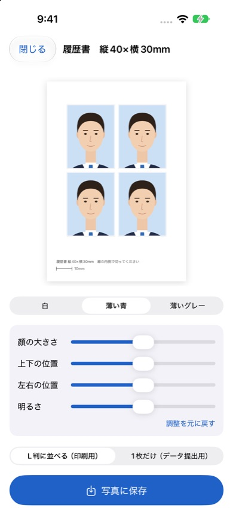

証明写真
iPhoneで撮った写真の背景を消して、証明写真の規格サイズに自動で合わせるアプリです。L判に並べて保存すれば、コンビニの写真プリントで印刷できます。写真はiPhoneの中だけで処理し、外部に送信しません。
App Storeで近日公開
iPhone（iOS 17以降）・無料で試せます（透かしなしの保存は買い切り300円）


対応している規格
| 種類 | サイズ | L判に並ぶ枚数 |
|---|---|---|
| 履歴書 | 縦40×横30mm | 4枚 |
| パスポート | 縦45×横35mm | 4枚 |
| マイナンバーカード | 縦45×横35mm | 4枚 |
| 運転免許証 | 縦30×横24mm | 9枚 |
| 在留カード | 縦40×横30mm | 4枚 |
写真の規格は申請先によって変わることがあります。申請前に、申請先の最新の案内を確認してください。
できること
- 背景を消す：部屋の中で撮っても、背景を白・薄い青・薄いグレーに置き換えます。
- サイズを自動で合わせる：顔と頭の位置を見つけて、規格に合う大きさ・位置で切り抜きます。パスポートは規格の目安線つき。
- 微調整：顔の大きさ、上下・左右の位置、明るさを調整できます。
- L判に並べて保存：切り取り線と10mmの目盛りつき。コンビニの写真プリント（L判）で印刷できます。
- 1枚だけ保存：オンライン申請などに使える、規格サイズ（600dpi）の画像を保存します。
よくある質問
写真はどこかに送信されますか
送信されません。背景の除去や顔の位置合わせはすべてiPhoneの中で行います。開発者がサーバーで写真を受け取ることはありません。
コンビニでの印刷のしかたは
アプリで「L判に並べる」を選んで写真に保存し、コンビニ各社の写真プリントでL判を選んで印刷します。印刷後、下の10mmの目盛りを定規で測ってサイズを確認し、線の内側で切り取ってください。
無料で使えますか
撮影・調整・保存まで無料で試せます。無料のままでは保存した写真に「見本」の透かしが入ります。買い切り（300円）で、すべての規格を何枚でも透かしなしで保存できます。機種変更後は「設定」の「購入を復元」を押してください。
お問い合わせ
メール: tanacount.support@gmail.com
返信までお時間をいただく場合があります。
ほかのアプリ
棚卸カウンター：JANバーコードを読み取って、小さなお店の在庫を数えるiPhoneアプリ
補助金ウォッチ：気になる補助金の締切を通知するiPhoneアプリ